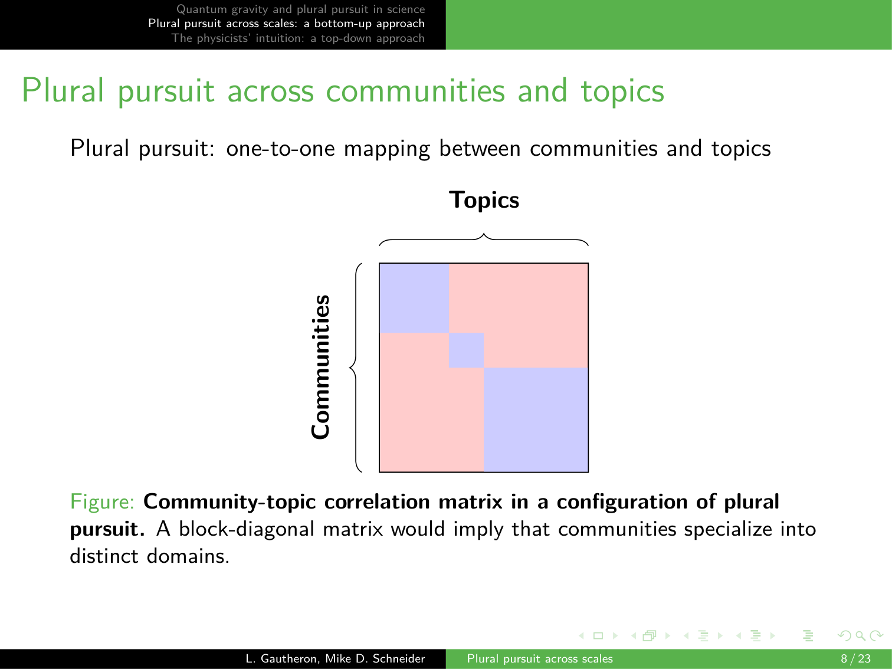

13 Quantum gravity and plural pursuit in science
Overview
L. Gautheron and Mike Schneider, in a collaborative endeavour with Schneider from the University of Missouri, have embarked upon a developing project. This initiative addresses fundamental questions within the philosophy of science, integrating advanced computational methods, including those discussed in recent academic discourse, with sophisticated social network analysis techniques. Gautheron and Schneider systematically explore the concept of ‘plural pursuit’ within the context of quantum gravity research.
Their approach outlines three distinct steps. First, the authors establish the philosophical framework and introduce the case study. Second, they construct a ‘bottom-up’ reconstruction of the quantum gravity research landscape. Finally, they confront this empirical reconstruction with physicists’ ‘top-down’ intuitions regarding their field’s structure. The project ultimately seeks to determine whether quantum gravity research exemplifies plural pursuit, characterised by independent communities pursuing distinct paradigms in parallel.
13.1 Introduction to Plural Pursuit in Quantum Gravity

Gautheron and Schneider’s developing project, a collaborative endeavour with Mike Schneider from the University of Missouri, directly addresses fundamental questions in the general philosophy of science. The authors integrate computational methods, previously discussed in academic forums, with social network analysis techniques to achieve their objectives. Their presentation systematically unfolds in three distinct steps.
Initially, Gautheron and Schneider establish the philosophical framing and introduce quantum gravity as the central case study. Subsequently, they propose a ‘bottom-up’ reconstruction of the quantum gravity research landscape. Finally, the authors confront this empirically derived reconstruction with physicists’ own ‘top-down’ intuitions concerning the field’s inherent structure. The overarching themes, prominently displayed on the accompanying slide, encompass ‘Quantum gravity and plural pursuit in science’, ‘Plural pursuit across scales: a bottom-up approach’, and ‘The physicists’ intuition: a top-down approach’.
13.2 Presentation Structure and Core Themes

Gautheron and Schneider systematically unfold their presentation in three distinct steps. Initially, they establish the philosophical framing and introduce quantum gravity as the central case study. Subsequently, the authors propose a ‘bottom-up’ reconstruction of the quantum gravity research landscape. Finally, they confront this empirically derived reconstruction with physicists’ own ‘top-down’ intuitions concerning the field’s inherent structure.
The accompanying slide visually reinforces these core themes, prominently highlighting ‘Quantum gravity and plural pursuit in science’. It also presents ‘Plural pursuit across scales: a bottom-up approach’ and ‘The physicists’ intuition: a top-down approach’ as integral, albeit visually de-emphasised, components.
13.3 The Fundamental Problem of Quantum Gravity

A central, enduring challenge in fundamental physics involves formulating a quantum theory of gravity. This profound problem necessitates reconciling our understanding of phenomena at very small scales, governed by quantum mechanics, with our knowledge of very large scales, described by general relativity. Physicists have attempted numerous solutions, with string theory emerging as the most prominent amongst them.
To comprehensively account for this multifaceted situation, Gautheron and Schneider introduce the concept of ‘plural pursuit’. The slide explicitly titles this section ‘A plurality of approaches to quantum gravity’, framing the core problem as ‘how to formulate a quantum theory of gravity?’ and prompting a discussion on ‘Attempted solutions:’.
13.4 Defining Plural Pursuit in Scientific Inquiry
Mike Schneider defines ‘plural pursuit’ as ‘distinct yet concurrent instances of normal science, dedicated to a common problem-solving goal’. In this specific context, the shared objective involves reconciling quantum theory with gravitation. Each instance of normal science, crucially, finds its articulation through a social community intrinsically linked to an intellectual disciplinary matrix. This concept draws parallels with Kuhn’s paradigms, Laudan’s research traditions, and Lakatos’ research programmes.
Consequently, Gautheron and Schneider pose an empirical question: does quantum gravity research exemplify plural pursuit, meaning it comprises independent communities concurrently pursuing distinct paradigms? The accompanying slide reiterates the problem and enumerates specific attempted solutions, including String theory, Supergravity, Loop quantum gravity (encompassing spin foams), Causal set theory, and Asymptotic safety.
13.5 Bottom-Up Reconstruction Methodology
Gautheron and Schneider systematically gathered a substantial data corpus, comprising approximately 200,000 abstracts and titles from fundamental physics literature. Their methodology then proceeded in two distinct steps. First, they reconstructed the intellectual structure of the field through linguistic analysis, employing the Bertopic pipeline. This process involved spatialising documents into an embedding space, followed by unsupervised clustering at a highly fine-grained level.
This meticulous approach yielded 600 distinct topics, a granularity deemed necessary for accurately capturing niche research areas, some of which might involve as few as 100 papers. Consequently, the authors assigned each physicist a ‘specialty’, determined by the most prevalent topic across their publications, thereby partitioning authors according to the field’s inherent linguistic and intellectual structure. Second, Gautheron and Schneider conducted a comprehensive social network analysis. This involved constructing a co-authorship graph, where individual physicists functioned as nodes and co-authorship relationships formed the edges. Applying a community detection method to this network, the authors recovered approximately 800 communities from a total of 30,000 physicists, providing an alternative partition of authors that directly reflects the field’s social structure. The accompanying slide visually reinforces the problem and attempted solutions, whilst explicitly linking them to the concept of ‘plural pursuit’.
13.6 Conceptualising Plural Pursuit as a One-to-One Mapping

Within this framework, Gautheron and Schneider define plural pursuit as a precise one-to-one mapping between distinct communities and their corresponding intellectual topics. The authors visualise this relationship using a correlation matrix, where communities align with topics. An ideal scenario, indicative of a clear division of labour, would manifest as a block-diagonal matrix, signifying that each community dedicates itself entirely to a single topic. The accompanying slide, titled ‘Normal science and plural pursuit’, explicitly defines plural pursuit as ‘distinct yet concurrent instances of normal science, dedicated to a common problem-solving goal’.
13.7 Addressing Scale-Dependency in Research Landscapes

Gautheron and Schneider observe that directly applying the fine-grained partitions, comprising 600 topics and 800 communities, results in a highly complex and unintelligible correlation matrix. This challenge, the authors explain, stems from several issues inherent in fine-graining. Firstly, the level of topic fine-graining often proves arbitrary; for instance, string theory might appear scattered across numerous distinct topics. Secondly, micro-social processes significantly shape communities, enabling multiple communities to undertake large research programmes concurrently.
More fundamentally, the computational notions of ‘topic’ and ‘community’ are inherently scale-dependent. Conceptually, research programmes themselves exhibit nested structures, allowing for the division of, for example, string theory into families and subfamilies. Consequently, Gautheron and Schneider argue that identifying instances of plural pursuit demands addressing this inherent ambiguity arising from observations at different scales. The accompanying slide reiterates the definition of plural pursuit whilst elaborating that ‘Each instance of normal science is articulated by community × intellectual disciplinary matrix’, citing Kuhn’s paradigms, Laudan’s research traditions, and Lakatos’ research programmes as examples.
13.8 Hierarchical Reconstruction of the Research Landscape

To address the challenges of scale-dependency, Gautheron and Schneider propose a hierarchical reconstruction of the quantum gravity research landscape. For topics, the authors implement a hierarchical clustering approach, commencing with 600 fine-grained topics and progressively merging them using an agglomerative clustering technique. Concurrently, for the community structure, they employ a hierarchical stochastic block model from the outset, which learns a multi-level partition into progressively coarser communities.
These hierarchical structures collectively induce a notion of scale, enabling observation of the system at various levels; for instance, one can visualise the co-authorship network with scientists’ specialties indicated by colour at different linguistic coarse-graining levels. Nevertheless, Gautheron and Schneider note that a persistent challenge remains: the chosen scale for observation is still arbitrary, complicating the selection of an appropriate level for either the topic or community structure. The accompanying slide reiterates the core definitions whilst posing the central empirical question: ‘Is quantum gravity research an instance of plural pursuit? (i.e., independent communities pursuing different paradigms in parallel)’.
13.9 Necessity of Adaptive Topic Coarse-Graining

Crucially, the selection of scale significantly impacts the resulting correlation matrix, leading to markedly different interpretations of the research landscape. Consequently, Gautheron and Schneider propose an adaptive topic coarse-graining strategy to address this variability. The rationale underpinning this approach is that whilst fine-grained topics capture subtle linguistic nuances, some of these distinctions hold no practical consequence for scientists’ collaborative capacities.
Their primary objective, therefore, involves systematically removing degrees of freedom from the initial fine-grained partition without compromising any information essential for comprehending the field’s social structure. The accompanying slide, titled ‘Clustering pipeline’, specifies the dataset as ‘228748 abstracts+titles of theoretical physics listed on Inspire HEP’ and visually outlines the ‘Linguistic analysis’ process, whilst also indicating the presence of a ‘Social network analysis’ component.
13.10 Adaptive Topic Coarse-Graining Methodology

Gautheron and Schneider employed the Minimum Description Length (MDL) criterion to select an appropriate scale for topic coarse-graining. This criterion aims to minimise a quantity that judiciously balances two critical requirements: the linguistic partition’s efficacy in explaining the field’s social structure, and the imperative for a partition that avoids excessive complexity or fine-graining. The authors iteratively refined the 600-topic hierarchical tree, continuing as long as this refinement improved the MDL criterion.
The procedure ceased when further increases in complexity no longer yielded sufficient information gain regarding the social structure. This adaptive strategy successfully reduced the initial 600 topics to a more manageable 50 coarse-grained topics. Notably, whilst many topics were aggregated, Gautheron and Schneider meticulously preserved certain small-scale linguistic topics, underscoring their crucial role in comprehending the social structure. This outcome, the authors contend, validated the initial fine-grained classification, as some of these smaller topics proved indispensable for the social analysis. The accompanying slide, titled ‘Clustering pipeline’, specifies the dataset as ‘2287748 abstracts+titles of theoretical physics listed on Inspire HEP’ and visually outlines the ‘Linguistic analysis’ process, whilst also indicating the presence of a ‘Social network analysis’ component.
13.11 Labelling and Focusing Coarse-Grained Topics

The coarse-graining process ultimately yielded 50 distinct topics. To enhance their interpretability, Gautheron and Schneider assigned labels to these topics by extracting representative engrams. For the purpose of this study, the authors’ analysis specifically focused on those topics directly involving quantum gravity. The accompanying slide, titled ‘Clustering pipeline’, details the ‘Linguistic analysis’ pipeline, which commences with the spatialisation of documents into an embedding space (L.1), proceeds to unsupervised clustering (L.2) that identified K=611 clusters, and culminates in the derivation of individual ‘Specialty σ_i’ (L.3).
13.12 Matching Intellectual Topics to Social Communities

Gautheron and Schneider employed a correlation matrix to systematically match the coarse-grained topics with the field’s community structures across various scales. For each topic, the authors meticulously identified the community that most effectively explained its presence across different levels of the community hierarchy. Their analysis yielded several key observations: some expansive topics, such as a prominent purple cluster, exhibited no clear ties to specific communities, suggesting a broad, pervasive interest across the entire field.
Conversely, other topics, notably string theory, demonstrated a robust correspondence with a community structure situated at the third level of the hierarchy. Interestingly, certain quantum gravity research programmes, such as loop quantum gravity, aligned with communities found at much lower, more fine-grained levels of the hierarchy. Furthermore, the study revealed intricate nested structures; for instance, a smaller community, whilst embedded within a larger string theory community, simultaneously maintained strong ties to a distinct intellectual topic, holography. Ultimately, this comprehensive analysis indicated an absence of a clear division of labour, instead demonstrating a complex entanglement between different scales, as Gautheron and Schneider observe. The accompanying slide, titled ‘Clustering pipeline’, specifies the dataset as ‘228748 abstracts+titles of theoretical physics listed on Inspire HEP’ and visually outlines the complete pipeline, encompassing both Linguistic analysis (L1, L2, L3) and Social network analysis (S1: Community detection C=819).
13.13 Top-Down Approach: Physicists’ Intuition on Field Structure

To gather a ‘top-down’ perspective, Gautheron and Schneider surveyed the founding members of the International Society for Quantum Gravity. The authors specifically asked respondents to ‘Provide a list of quantum gravity approaches that come to your mind as structuring the total research landscape in quantum gravity.’ Despite some disagreement amongst the physicists, Gautheron and Schneider successfully compiled a comprehensive and detailed list of approaches that partition the field.
For further analysis, the authors specifically focused on String theory, Supergravity, and Holography. This particular focus arose from Gautheron and Schneider’s observation that physicists themselves expressed uncertainty regarding whether these three approaches should be considered distinct, with some arguing for their fundamental connection to string theory, notwithstanding their clear historical and conceptual differences. The accompanying slide, titled ‘Clustering pipeline’, specifies the dataset as ‘228748 abstracts+titles of theoretical physics listed on Inspire HEP’ and visually outlines the complete pipeline, encompassing both Linguistic analysis (L1, L2, L3) and Social network analysis (S1).
13.14 Confronting Bottom-Up Reconstruction with Top-Down Intuition

Gautheron and Schneider trained a classifier to predict the specific approach of papers from their text embeddings, utilising the all-MiniLM-L6-v2 model applied to titles and abstracts, alongside hand-coded labels. This classifier enabled the authors to directly confront the supervised, ‘top-down’ list of approaches with the ‘bottom-up’ reconstruction. Their results demonstrated varied effectiveness: whilst the classifier performed commendably for certain approaches, exhibiting a strong correspondence to topics emergent from the bottom-up analysis, it proved less effective for approaches that were either phenomenological or lacked a ‘full-fledged conceptual framework’. Conversely, it achieved high accuracy for ‘well-defined and conceptually autonomous’ frameworks.
A particularly significant finding emerged from the authors’ bottom-up approach: a large string theory cluster that comprehensively encompassed both supergravity and string theory. This empirical observation notably converged with the uncertainty expressed by physicists regarding the true separation of these two areas, despite their distinct historical trajectories and conceptual underpinnings, as Gautheron and Schneider highlight. The accompanying slide, titled ‘Clustering pipeline’, specifies the dataset as ‘228748 abstracts+titles of theoretical physics listed on Inspire HEP’ and visually outlines the complete pipeline, encompassing both Linguistic analysis (L1, L2, L3) and Social network analysis (S1).
13.15 Implications for Plural Pursuit in Quantum Gravity

Gautheron and Schneider observe that the extensive overlap between communities engaged in supergravity and string theory research suggests a challenging meaningful separation between them, even if a small contingent of individuals continues to pursue supergravity independently. This observation aligns with the authors’ bottom-up assessment, which, by systematically removing linguistic nuances devoid of social structural consequences, consolidates these areas. This convergence occurs despite the initial linguistic clusters accurately acknowledging their conceptual distinctions.
In conclusion, Gautheron and Schneider contend that socio-epistemic systems are demonstrably observable at multiple scales, implying that the very notions of communities and disciplinary matrices are inherently scale-dependent. Consequently, identifying genuine configurations of plural pursuit necessitates a meticulous matching of these structures across various scales, as their work demonstrates. Furthermore, Gautheron and Schneider’s bottom-up reconstruction of the quantum gravity research landscape possesses the capacity to either confirm or critically re-assess physicists’ established intuitions. Crucially, the increasing power of computational methods now enables scholars to revisit and challenge long-held philosophical insights, particularly intuitions concerning paradigms or communities within specific contexts such as quantum gravity. As a final reflection, paraphrasing Clausewitz, ‘Computation is the continuation of philosophy by other means’. The accompanying slide, titled ‘Plural pursuit across communities and topics’, visually defines plural pursuit as a ‘one-to-one mapping between communities and topics’ and presents a ‘Community-topic correlation matrix’ with red and blue blocks, noting that ‘A block-diagonal matrix would imply that communities specialize into distinct domains.’
13.16 Additional Visual Materials
The following slides provide supplementary visual information relevant to the presentation:
- This slide serves as a summary, titled ‘Summary’ in large green font at the top left. The main content area lists three key topics, likely representing the structure or main points of the presentation. The first point, ‘Quantum gravity and plural pursuit in science’, is displayed in a faded, light green colour. The second point, ‘Plural pursuit across scales: a bottom-up approach’, is prominently highlighted in a vibrant green, suggesting it is the current focus or a primary takeaway. The third point, ‘The physicists’ intuition: a top-down approach’, is also in a faded, light green colour. This visual emphasis indicates a progression through or a specific focus on the ‘bottom-up approach’ within the context of plural pursuit across scales. A persistent black banner at the top left of the slide reiterates these three topics, with ‘Plural pursuit across scales: a bottom-up approach’ also highlighted in white text, reinforcing its current relevance. The bottom of the slide features a black footer bar with the authors’ names, ‘L. Gautheron, Mike D. Schneider’, on the left. On the right, a green section of the footer displays the presentation title, ‘Plural pursuit across scales’, and the slide number ‘6 / 23’. Standard presentation navigation icons are also visible in the bottom centre.